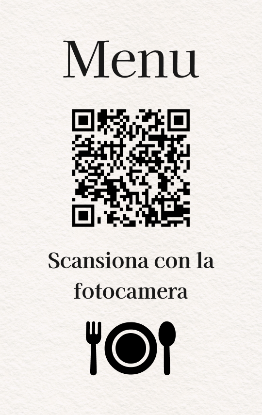

Ristoranti & Locali
Il menu che appare con un tocco, sempre aggiornato
Il cliente appoggia lo smartphone sulla carta NFC posizionata sul tavolo e visualizza istantaneamente il menu digitale del locale: piatti, prezzi, allergeni e foto, senza scaricare nulla.
Richiedi una carta campione
